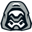
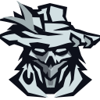

Start here
Borderlands4.exe / OakGame (Steam on another drive is fine, e.g. D:\SteamLibrary\steamapps\common\Borderlands 4).Stuck Offline? Set the correct install folder → fully restart the game → load a character → Refresh status. Other tools: GitHub · save editor scooterstoolbox.com
Waiting for Borderlands 4.
Pick who receives boosts in the bar under the tabs, then use any page. Click a name below to set target quickly.
Borderlands 4 install location
Where is Borderlands4.exe?
If Steam/Epic put the game on another drive, auto-detect may miss it — press
Set install folder and pick the folder that contains OakGame
(example: D:\SteamLibrary\steamapps\common\Borderlands 4).
First use: set your Borderlands 4 install folder, then press Install SDK + Squ1ggs mod if oak2 is missing. Fully restart Borderlands 4, load a character, then wait for Online.